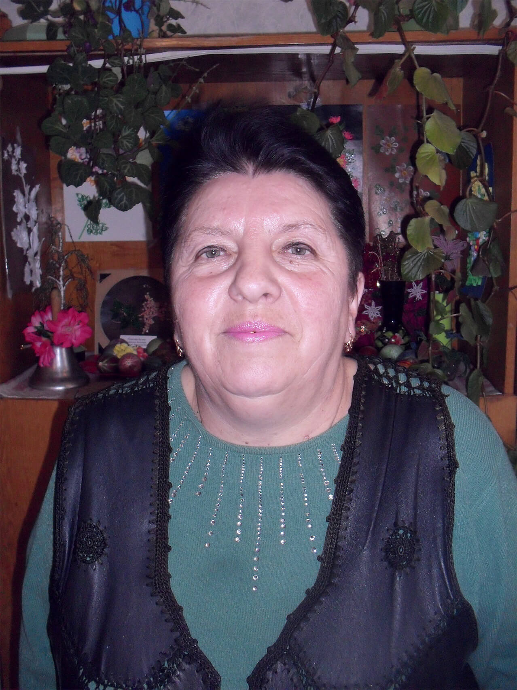

на головну
Кабінет української мови
вчитель, заступник директора
| Прізвище: | Крижова |
| Ім’я: | Валентина |
| По-батькові: | Олександрівна |
| Педагогічний стаж: | 35 років |
| Працює в школі з: | 1988р. |
